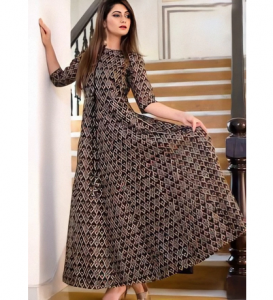

Wearing Indian Kurtis’ With Style
Kurti is not just confined to only Desi culture now.There are many options to wear Indian Kurti with style.We just have to stay updated with the latest trends.Kurti has become a fashion icon worldwide.Women mostly prefer stylish looks these days rather than traditionally wearing Kurti.
Kurti is the most comfortable and trendy among all dresses.Kurti can be used as a formal and casual dress and a perfect choice for students.In this blog, we’ll let you know about ways you can style your Kurti with.So keep reading the article you’ll find something of your own interest—the idea of wearing Indian Kurti with style.
Kurti With Jeans
Jeans are suitable for all types of Kurtis, whether the Kurti is long or short.Kurti with jeans looks cool and stylish.Jean is something that will go with any type of Kurti.The combination of Kurti with jeans is a perfect mixture of Indian and Western culture.
Kurti With Denim Jacket
Denim jeans are also suitable for all types of Kurtis (short or long).It goes well with a pair of loafers, sneakers, Kurti, and a jacket.The denim jacket is a good choice to look cool and stylish.It is also in trends from years and whether you go shopping or to study.
Kurti With A Flare Skirt
If you have a flared skirt in your closet, it not only goes with shirts but also with Kurti.You can find many designers online who are combing Kurti with a flared skirt.If you have even one ethnic flare skirt, you can style it with all Kurtis in your store.You can add a dupatta too for a more formal touch and can attend all sorts of events.
Kurti With Palazzo Pants
Kurti goes well with palazzo pants.Because of its unique design, it is loved by women of both West and East.Palazzo looks pretty and very comfortable to wear in casual and formal events.If you have a palazzo pair, it can go well with all sorts of Kurtis, whether plain or embroidered.
Kurti With Shorts
Many options are available if you browse for Indian Kurti online.Short Kurtis are good to go with Shorts.Colors don’t matter.All types of Kurtis look good in shorts.Embroidered or plain that’s up to you.You can also wear frock-type Kurti with shorts.I like this cool combination, and it is really popular among women of the west and east.You can also use accessories such as a belt to look more attractive.
Layered Kurti
Layered Kurti is sleeveless; it is like an accessory over a normal Kurti.Layered Kurti looks cool with tail Kurti, Angrakha Kurti, Long Kurti, flared Kurti, dhoti Kurti, A-line Kurti, and indo west Kurti.You can also use a belt as an accessory and can wear stone jewelry.It gives a beautiful feeling, especially to women with long heights.It gives more shape and fitting to the dress.Layered Kurti also looks good with a palazzo and flared skirt.
Share on Facebook Tweet Follow us
Posted On: 2021-02-27T00:00:00
Posted By: Danielle Voss



Content Date: 2021-02-27
Download Date: 2021-07-09
Document ID: L0C04E1XS